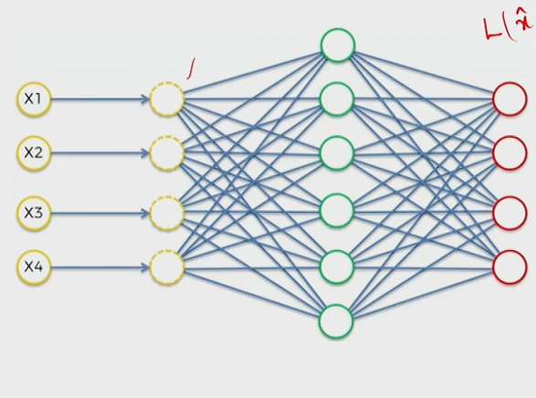

Denoising Autoencoders
Input corruption, noise models, neighborhood dependency, and how denoising provides regularisation.
This session introduces the denoising autoencoder — the first of three regularised variants of autoencoders. We cover why regularisation is needed, how input corruption forces the model to learn meaningful features, the mathematics of different noise types, and the neighbourhood dependency that makes reconstruction possible.
1. Why Regularisation Is Needed
1.1 The Overfitting Problem in Overcomplete Architectures
In a standard autoencoder, the encoder maps input $x$ through a weight matrix $W$ and bias $b$ to a hidden representation $h$, followed by an activation function $g$:
$$h = g(Wx + b)$$
The decoder then reconstructs the input from $h$:
$$\hat{x} = g'(W' h + b')$$
1.2 The Need for Regularised Variants
Regularisation restricts the freedom of the network's parameters, preventing trivial identity mappings and encouraging meaningful, generalisable features. Three important regularised variants exist:
- Denoising autoencoder (this session)
- Sparse autoencoder (next session)
- Contractive autoencoder
The core principle is the same across all three: restrict the model's ability to trivially copy the input, forcing it to learn robust, generalisable representations.
2. Architecture and Working Mechanism
2.1 Core Principle
The denoising autoencoder (DAE) prevents overfitting by intentionally corrupting the input before passing it to the encoder, while requiring the decoder to reconstruct the original clean input. This forces the model to learn meaningful features rather than simply copying.

2.2 Step-by-Step Working Mechanism
Step 1 — Corrupt the input: Take the original clean input $x$ and randomly corrupt it using a probability-based rule, producing $\tilde{x}$. The corruption can be Gaussian noise, masking noise, salt-and-pepper noise, or other methods.
Step 2 — Pass corrupted input to encoder: The corrupted input $\tilde{x}$ is fed to the encoder:
$$h = g(W \tilde{x} + b)$$
Step 3 — Pass latent representation to decoder: The decoder reconstructs from $h$:
$$\hat{x} = g'(W' h + b')$$
Intermediate decoder layers use ReLU; the final layer uses an activation matching the input data type (sigmoid for $[0, 1]$-normalised data, linear for real-valued).
Step 4 — Compute loss against original clean input: The reconstruction loss is computed between $\hat{x}$ and $x$ (the original clean input), not between $\hat{x}$ and $\tilde{x}$:
$$\mathcal{L} = \text{Loss}(x, \hat{x})$$
3. Input Corruption Methods
3.1 Gaussian Noise
Gaussian noise adds random noise drawn from a normal distribution to each input feature:
The variance $\sigma^2$ controls the corruption intensity. Small $\sigma^2$ produces subtle perturbations; large $\sigma^2$ produces significant distortions. Example: Original $x = [0.50, 0.80, 0.20, 0.90]$ becomes $\tilde{x} = [0.51, 0.75, 0.23, 0.82]$. Each value is perturbed, but none are completely lost — this makes the model tolerate small, pervasive disturbances.
3.2 Masking Noise
Masking noise randomly sets individual input features to zero with a fixed probability $q$:
The parameter $q$ controls the fraction of dropped features. This is conceptually similar to dropout, but applied to the input layer rather than hidden layers. Example: Original $x = [0.80, 0.30, 0.90, 0.50, 0.20]$ with $q = 0.4$ might yield $\tilde{x} = [0.80, 0, 0.90, 0, 0.20]$.
3.3 Salt and Pepper Noise
Salt and pepper noise replaces random pixel values with extreme intensity values — either the minimum (pepper/black) or maximum (salt/white) value in the data range:
In a binary image (values 0 and 1), some 1s become 0 (pepper) and some 0s become 1 (salt). In a grayscale image (values 0–255), a pixel value of 128 might become 0, and a pixel value of 130 might become 255. The corrupted image exhibits scattered white and black dots resembling salt and pepper grains.
| Property | Gaussian | Masking | Salt & Pepper |
|---|---|---|---|
| Effect | Shifts all values slightly | Sets random features to zero | Replaces with extreme values |
| Distribution | $\mathcal{N}(0, \sigma^2)$ | Bernoulli$(q)$ | Random extreme values |
| Data loss | None (all perturbed) | Partial (some dropped) | Partial (some replaced) |
| Visual effect | Subtle blur | Missing patches | White/black dots |
4. Neighbouring Pixel Dependency
4.1 The Missing Value Problem
When the input is corrupted, some pixel values are lost or altered. To reconstruct the original clean image, the model must recover these missing values. The fundamental question is: how does the model know what value should fill each missing position?
The answer lies in the correlation between neighbouring pixels. In any natural image, pixels are not independent — they are highly correlated with their spatial neighbours. Regions belonging to the same object (a cat's tail, a digit's stroke, a person's face) have similar pixel intensities. This correlation means that if a pixel is missing, its value can be inferred from the surrounding pixels.
4.2 Binary Image: Neighbourhood Estimation
For a binary image (pixel values 0 and 1), a simple neighbourhood estimation counts the number of 0s and 1s among the 8 neighbours and assigns the majority value. Consider a $3 \times 3$ binary patch with the centre pixel missing:
$$\begin{bmatrix} 1 & 1 & 0 \\ 1 & ? & 1 \\ 0 & 1 & 1 \end{bmatrix}$$
Counting the 8 neighbours: 6 ones and 2 zeros. $P(\text{center}=1) = 6/8 = 0.75$. Since $0.75 > 0.25$, the missing pixel is estimated as 1.
4.3 Grayscale Image: Neighbourhood Estimation
For a grayscale image (continuous intensity values), the missing value is estimated as the mean of its neighbouring pixel intensities. Consider a grayscale patch with centre missing:
$$\begin{bmatrix} 120 & 125 & 130 \\ 123 & ? & 127 \\ 128 & 122 & 126 \end{bmatrix}$$
Mean of the 8 neighbours: $(120 + 125 + 130 + 123 + 127 + 128 + 122 + 126) / 8 = 124.625 \approx 125$.
4.4 CNN-Based Practical Implementation
When the input is an image, the practical implementation uses convolutional filters to learn neighbourhood dependencies. When a $3 \times 3$ kernel slides across an image containing a missing pixel, the convolution operation multiplies the kernel weights with all 8 neighbouring values and the centre (possibly zero) value. The kernel's learned weights determine how much influence each neighbour has on the reconstructed value.
Implementation:
Conv2D(32, (3, 3), activation='relu', padding='same')This applies 32 learnable $3 \times 3$ kernels with ReLU activation. Each kernel captures a specific pattern of neighbourhood dependency. The padding="same" preserves spatial dimensions, allowing the model to process every pixel position.
5. How Denoising Provides Regularisation
5.1 Preventing the Shortcut of Direct Copying
In a standard autoencoder, the model receives clean input $x$ and reconstructs $\hat{x}$, aiming to minimise loss between $x$ and $\hat{x}$. In an overcomplete architecture, the model can achieve zero loss by simply copying $x \to h \to \hat{x}$ without learning meaningful features.
In a denoising autoencoder, the model receives corrupted input $\tilde{x}$ and must reconstruct clean output $\hat{x}$ matching the original $x$. If the model attempted to copy the input directly, it would output a corrupted image — producing a large loss against the clean target. The model cannot achieve low loss by copying; it must actively learn to remove the noise and recover the original information.
5.2 Full Pipeline Summary
- Corrupt: $x \xrightarrow{\text{noise}} \tilde{x}$ (Gaussian, masking, or salt-and-pepper)
- Encode: $\tilde{x} \xrightarrow{W, b, g} h$ (latent representation)
- Decode: $h \xrightarrow{W', b', g'} \hat{x}$ (reconstructed output)
- Loss: Minimise $\mathcal{L}(x, \hat{x})$ — compare against original clean input, not corrupted input
- Neighbourhood: Missing values inferred from neighbouring pixel/feature dependencies via learned convolution or weight patterns
5.3 Comparison: Standard vs. Denoising Autoencoder
| Property | Standard AE | Denoising AE |
|---|---|---|
| Input to encoder | Clean $x$ | Corrupted $\tilde{x}$ |
| Reconstruction target | $x$ | $x$ (original clean) |
| Overcomplete risk | Identity mapping / overfitting | Cannot copy — forced to learn |
| Regularisation | None | Corruption prevents copying |
| Loss computation | Loss$(x, \hat{x})$ | Loss$(x, \hat{x})$ |
5.4 Primary and Hidden Training Objectives
The primary training objective is to minimise the reconstruction loss between the clean input $x$ and the reconstructed output $\hat{x}$:
$$\mathcal{L} = \text{Loss}(x, \hat{x})$$
The hidden objective is neighbourhood dependency learning. The reconstructed pixel value at any location $(i, j)$ is obtained from its local neighbourhood context. The model learns that missing or corrupted values can be recovered by leveraging patterns and correlations in surrounding data — this is the fundamental insight that makes denoising autoencoders powerful, generalisable models.
5.5 Application
The denoising autoencoder is a powerful practical tool. Any scenario where data is inherently corrupted (noisy images, incomplete records, distorted signals) can benefit from a denoising autoencoder trained on intentionally corrupted clean data. During training, the model learns to remove noise and recover clean information; during testing, when genuinely corrupted data is presented, the model produces a clean reconstruction.
The next session covers the sparse autoencoder, the second regularised variant.